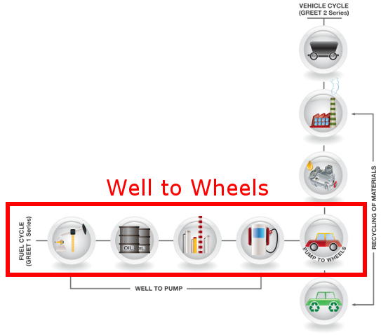
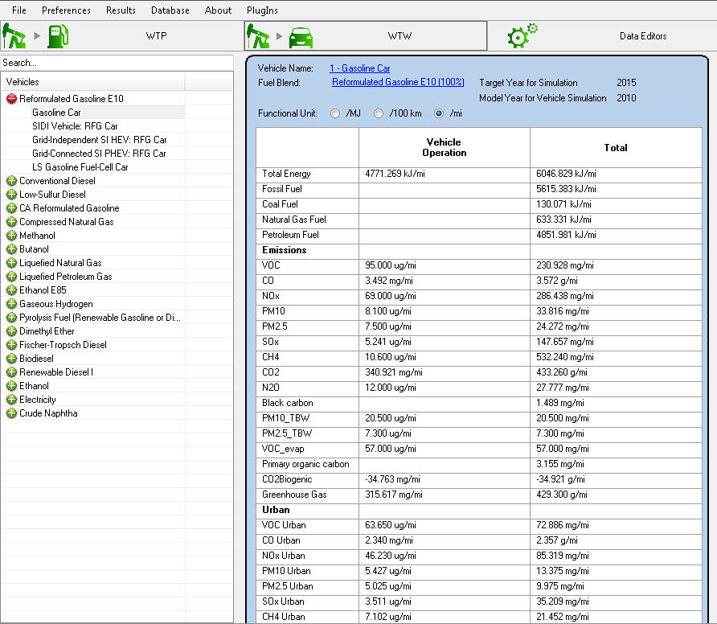
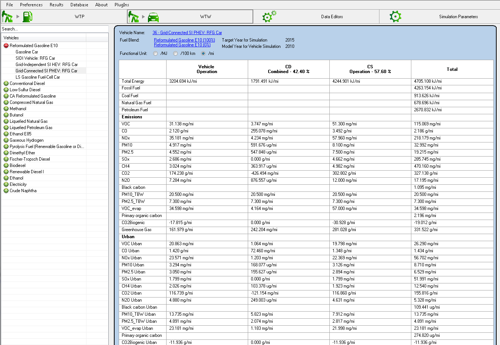

Well to Wheels
Well to Wheel results account for all the energy and emissions necessary to produce the fuel used in the car (Well to Pump) and the operation energy and emissions associated with the
vehicle technology (tail pipe emissions, other emissions and energy efficiency of the vehicle)

Well to Wheel : Well to Pump and Vehicle Technology
Well to Wheels results explorer - Grid Independent Vehicle
In GREET the well to wheels explorer allows the user to select a vehicle technology and see results associated with the operation of the vehicle itself and the well to wheel results
including the operation and the production of the fuel.
In order to see the results associated with a vehicle, you must select a vehicle into the tree on the left. Vehicle are categorized per fuel type, so to select a conventional gasoline
spark ignition engine car, double click on "Reformulated Gasoline E10" then select the desired vehicle:

Well to Wheel Explorer : Conventional gasoline car results
The energy and emission results are displayed on the right and classified in two main categories:
- - Vehicle Operation
These results are calculated based on the vehicle parameters only. The energy efficiency and emission factors for that car are taken into account, but no upstream is added there.
- - Total
Represents the Well to Wheels results for that car: includes the operation energy and emissions as well as the upstream energy and emissions necessary for the production of the fuel
On the top of the results we can see a couple of interesting items:
- - The vehicle name
This name can be clicked in order to access the vehicle parameters
- - The fuel blend in the tank of that vehicle
By clicking the name of the pathways or mixes used, the user can navigate to these pathways and mixes
- - The functional unit
Allows the user to see results per distance travelled (mile or 100km) or per energy used by the power plant of the vehicle (ICE or other technology). Showing the results per energy uses thus
"ignores" the vehicle efficiency from the results.
- - Target Year for Simulation
The target year used for the Well to Product: All parameters in the processes that have time series available will be using the value for the target simulation year
- - Model Year for Vehicle Simulation
The average model year of vehicles on the road. We usually assume that the average age of the vehicles on the road is 5 years. Thus the simulations for the vehicle technologies (engine efficiency
and emission factors) are 5 years "older" than the assumptions used for the fuel production. This parameter is adjustable in the Simulation Parameters.
Well to Wheels results explorer - Grid Connected Vehicle
For GREET connected vehicle the approach is similar, the only difference is that grid connected vehicle will be calculated for two distinct operation modes: Charge Depletion (CD) and Charge Sustaining (CS)
The results will be shown for:
- - The operation energy and emissions
Does not includes any upstream
- - The Charge Depleting mode
Uses some electric energy charged from the grid into the battery as well as some fuel for the engine
- - The Charge Sustaining mode
The vehicle operates as a regular hybrid with no energy from the grid used.

Well to Wheel Explorer : Gasoline PHEV Car
|